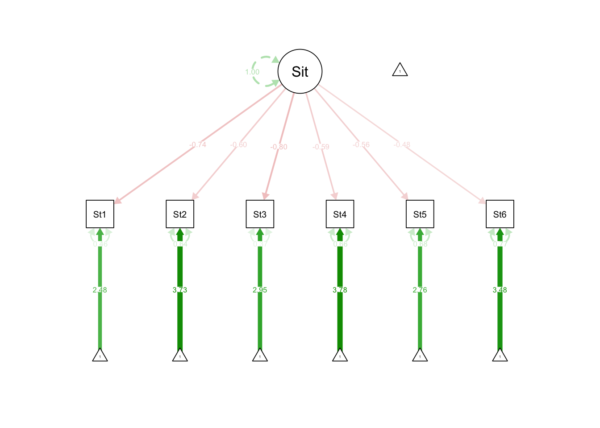
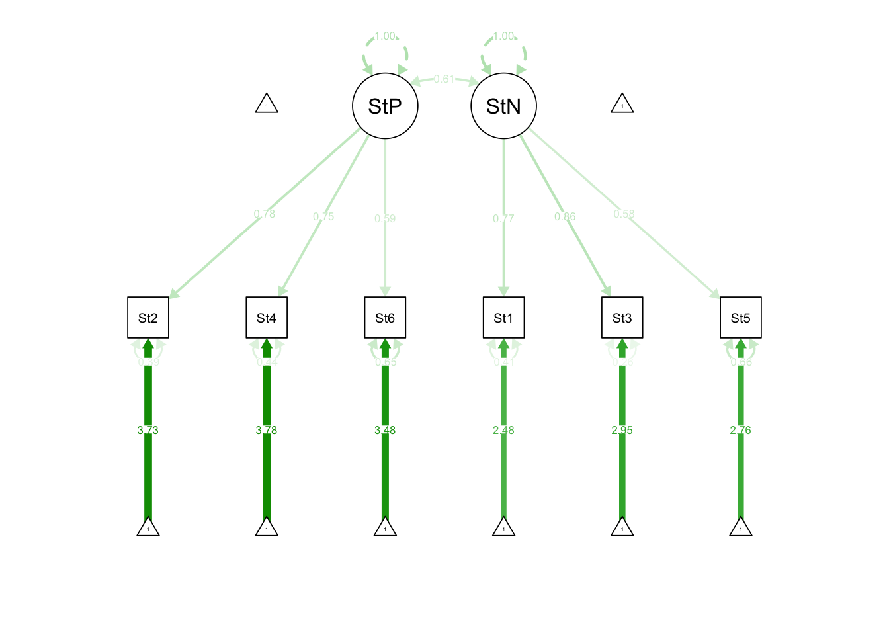
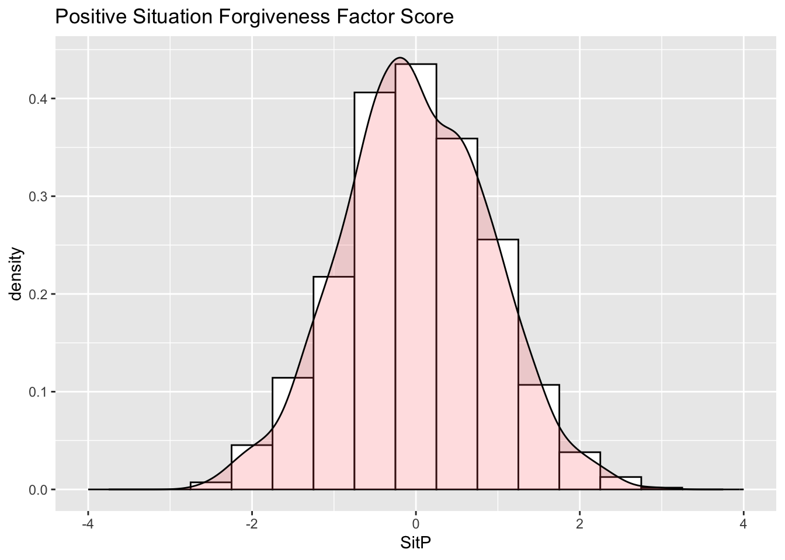
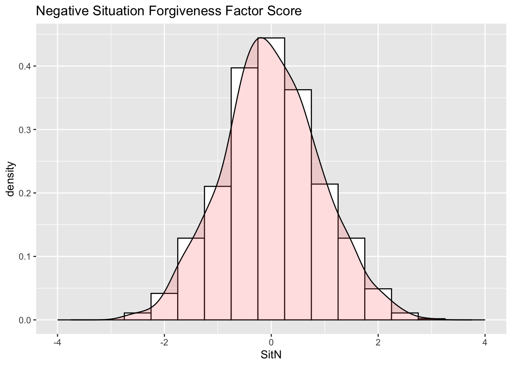
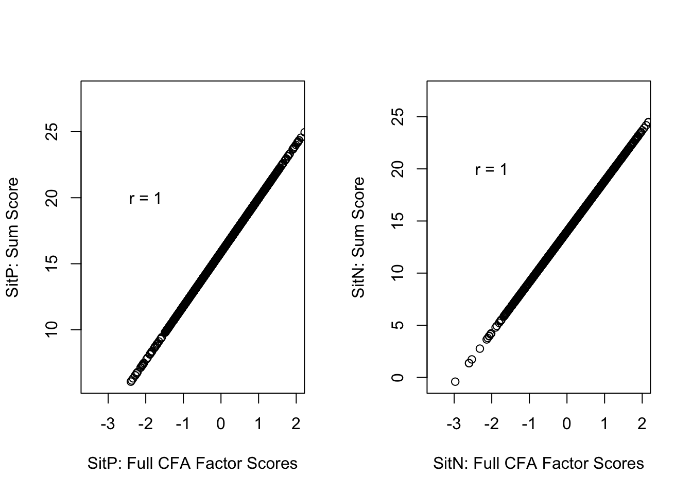
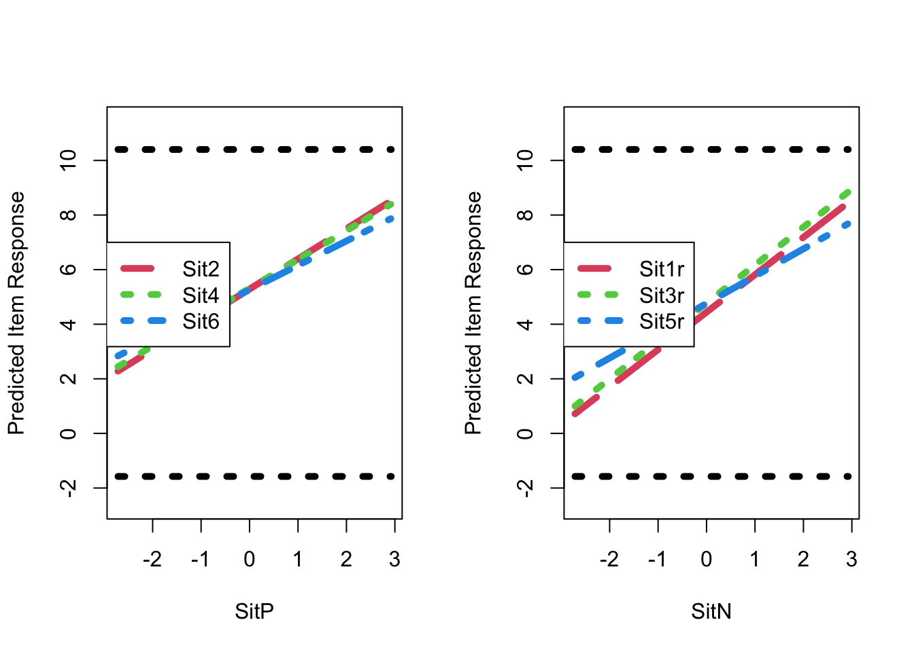

CFA Example Using Simulated Forgiveness of Situations (N = 1103)
The Forgiveness of Situations Subscale includes six items, three of which are reverse-coded, on a seven-point scale:
When things go wrong for reasons that can’t be controlled, I get stuck in negative thoughts about it. (R)
With time I can be understanding of bad circumstances in my life.
If I am disappointed by uncontrollable circumstances in my life, I continue to think negatively about them. (R)
I eventually make peace with bad situations in my life.
It’s really hard for me to accept negative situations that aren’t anybody’s fault. (R)
Eventually I let go of negative thoughts about bad circumstances that are beyond anyone’s control.
Response Anchors:
1 = Almost Always False of Me
2 = ?
3 = More Often False of Me
4 = ?
5 = More Often True of Me
6 = ?
7 = Almost Always True of Me
Note: the data for this example are simulated based on the results of the real data analysis. These results will be different than those reported in the other example file but are used to show you how to execute the syntax in this analysis.
Package Installation and Loading
For this example, we will be using the ggplot2 (for general plotting), melt2 (for data reshaping before plotting), and lavaan (for CFA) packages.
if (require(ggplot2)==FALSE){install.packages("ggplot2")}
The following object is masked from 'package:lavaan':
cor2cov
The following objects are masked from 'package:ggplot2':
%+%, alpha
if (require(knitr) ==FALSE){install.packages("knitr")}
Loading required package: knitr
if (require(kableExtra) ==FALSE){install.packages("kableExtra")}
Loading required package: kableExtra
if (require(semPlot) ==FALSE){install.packages("semPlot")}
Loading required package: semPlot
Data Import into R
The data are in a text file named Study2.dat originally used in Mplus (so no column names were included at the top of the file). The file contains more items than we will use, so we select only the “Forgiveness of Situations” items from the whole file.
#syntax from previous example: commented to remove for simulation# #read in data file (Mplus file format so having to label columns)# hfsData = read.table(file = "Study2.dat", header = FALSE, na.strings = "99999", col.names = c("PersonID", "Self1", "Self2r", "Self3", "Self4r", "Self5", "Self6r", "Other1r", "Other2", "Other3r", "Other4", "Other5r", "Other6", "Sit1r", "Sit2", "Sit3r", "Sit4", "Sit5r", "Sit6", "Selfsub", "Othsub", "Sitsub", "HFSsum"))# # #select Situations items and PersonID variables# hfsSituations = hfsData[c("PersonID", "Sit1r", "Sit2", "Sit3r", "Sit4", "Sit5r", "Sit6")]#setting seed for output constancy across machinesset.seed(04092017)# simulating data for analysis based on results of model04estimatesmodel04Simulate ="# SitP loadings (all estimated)SitP =~ 1.007*Sit2 + 1.064*Sit4 + 0.956*Sit6# SitN loadings (all estimated)SitN =~ 1.325*Sit1r + 1.349*Sit3r + 1.009*Sit5r# Unique Variances:Sit1r ~~ 1.294*Sit1r; Sit2 ~~ 0.888*Sit2; Sit3r ~~ 0.724*Sit3r; Sit4 ~~ 0.835*Sit4; Sit5r ~~ 1.926*Sit5r; Sit6 ~~ 1.428*Sit6; # Item Intercepts:Sit2 ~ 5.289*1Sit4 ~ 5.359*1Sit6 ~ 5.321*1Sit1r ~ 4.547*1Sit3r ~ 4.896*1Sit5r ~ 4.860*1# Factor CovariancesSitP ~~ .564*SitN"#generate datahfsSituations =simulateData(model = model04Simulate, sample.nobs =1103L, model.type ="sem")#add ID variablehfsSituations =data.frame(PersonID =1:1103, hfsSituations)#reorder variables to match data filehfsSituations = hfsSituations[c("PersonID", "Sit1r", "Sit2", "Sit3r", "Sit4", "Sit5r", "Sit6")]
Observed Sample Statistics
Sample Correlation Matrix
The observed correlation matrix, rounded to three digits:
#here the c() function selects only the variables, not the PersionID variableround(cor(hfsSituations[c("Sit1r", "Sit2", "Sit3r", "Sit4", "Sit5r", "Sit6")]), digits =3)
To do a CFA analysis, you only really need means, variances, and either correlations or covariances among items. That said, modern methods of estimation use the raw data (often called full information) rather than the summary statistics as the raw data enable better missing data assumptions when using maximum likelihood and Bayesian estimation methods.
The sample covariance matrix can be found from the sample correlations and variances. Each covariance between a pair of variables \(y_1\) and \(y_2\) is denoted with a \(\sigma_{y_1, y_2}\) and each correlation is denoted with a \(\rho_{y_1, y_2}\). The variance of a variable is denoted by \(\sigma^2_{y_1}\) and the standard deviation of a variable is the square root of the variance \(\sqrt{\sigma^2_{y_1}}\). The covariance can be found by taking the correlation and multiplying it by the product of the standard deviations.
Inversely, the correlation can be found by taking the covariance and dividing it by the product of the standard deviations:
\[\rho_{y_1, y_2} = \frac{\sigma_{y_1, y_2}}{\sqrt{\sigma^2_{y_1}}\sqrt{\sigma^2_{y_2}}}. \] Again, we change the denominator from \(N-1\) to \(N\) to be consistent with the Mplus example, which calculates covariances using maximum likelihood.
The assumptions of CFA (i.e., normally distributed factors, no item-level factor interactions, and conditionally normal distributed items) lead to the overall assumption that our item responses must be normally distributed. From the histograms below, do you think these are normally distributed?
lavaan syntax is constructed using a long text string and saved in a character object. In the example below model01SyntaxLong = " opens the text string, which continues for multiple lines until the final " terminates the string. The variable model01Syntax now contains the text of the lavaan syntax. Within the syntax string, the R comment character # still functions to comment text around the syntax. Each part of the model syntax corresponds to a set of parameters in the CFA model. You can find information about lavaan at https://lavaan.ugent.be.
model01SyntaxLong ="# Model 1 -- Fully Z-Scored Factor Identification Approach# Item factor loadings --> list the factor to the left of the =~ and the items to the right, separated by a plus# Once the factor is defined it can be used in syntax as if it is an observed variable# Parameters can be fixed to constant values by using the * command; starting values can be specified by using start()*; labels can be implemented with []Sit =~ Sit1r + Sit2 + Sit3r + Sit4 + Sit5r + Sit6# Item intercepts --> ~ 1 indicates means or intercepts# You can put multiple lines of syntax on a single line using a ; Sit1r ~ 1; Sit2 ~ 1; Sit3r ~ 1; Sit4 ~ 1; Sit5r ~ 1; Sit6 ~ 1;# Item error (unique) variances and covariances --> use the ~~ commandSit1r ~~ Sit1r; Sit2 ~~ Sit2; Sit3r ~~ Sit3r; Sit4 ~~ Sit4; Sit5r ~~ Sit5r; Sit6 ~~ Sit6; # Factor varianceSit ~~ 100*Sit# Factor mean (intercept)Sit ~ 0"
To run lavaan, the syntax string variable is passed to the lavaan(model = model01SyntaxLong, ...) function. In the function call, we also supply:
data = hfsSituations: The data frame which contains the variables in the syntax.
estimator = "MLR": Enables the use of robust maximum likelihood estimation, which helps for data that are not entirely normal.
mimic = "mplus": Ensures compatibility with Mplus output, which is often needed in practice (and is certainly needed for our homework system).
std.lv = TRUE: Uses the Z-score method of identification, setting all latent variable means to zero, all latent variable variances to one, and estimating all factor loadings.
If the model estimation was successful, no errors would be displayed (and no output would be shown). All model information and results are contained within the model01Estimates object. To access a summary of the results use the summary() function with the following arguments:
model01Estimates: The analysis to be summarized.
fit.measures=TRUE: Provides model fit indices in summary.
rsqaure=TRUE: Provides the proportion of variance “explained” for each variable (\(R^2\)).
standardized = TRUE: Provides standardized estimates in the summary.
Intercepts (of Items) – HERE, ARE ACTUAL ITEM MEANS BECAUSE FACTOR MEAN IS ZERO
Note: the last term in the list, Sit is the “intercept” (mean) of the factor. As it does not have a standard error, this indicates it was fixed to zero and not estimated.
Residual (Unique) Variances (variance of error terms)
Note: the last term in the list, Sit, is the variance of the factor. As it does not have a standard error, this indicates it was fixed to one (from the std.lv = TRUE option we used in the lavaan() function call) and not estimated.
\(Cov\left( Y_1, Y_2 \right) = \lambda_1 Var\left(F\right) \lambda_2 = (1.234)*(1)*(.702) = .866\) (actual covariance = .577, so the model over-predicted how related items 1 and 2 should be)
Plotting Path Diagrams
The R package semPlot helps provide a path diagram of a model. Here is an example:
semPaths(object = model01Estimates, what ="std")

Standardized Model Parameter Estimates
The last two columns of the summary output, Std.lv and Std.all, contain the standardized model parameter estimates. To understand the difference between standardized and unstandardized parameter estimates, let’s start with the standardized estimates. Standardized regression coefficients (and factor loadings) have a scale that is “units of Y” per “unit of X”. That is, the slope/loading, represents the increase in the dependent variable \(X\) per unit of the independent variable \(X\) (in our case, the factor). The units of \(Y\) are given by the standard deviation of \(Y\), or \(SD(Y)\). Similarly, the units of \(X\) are given by the standard deviation of \(X\), or \(SD(X)\). You can think of the units associated by the fraction \(\frac{SD(Y)}{SD(X)}\). So, the first factor loading (a value of 1.234 for the item Sit1r) indicates the numeric response to the item goes up by 1.234 for every one-unit increase in the factor Sit.
The process of standardization removes the units attached to the parameter. So, if the unstandardized factor loadings are expressed in units of \(\frac{SD(Y)}{SD(X)}\), the standardized units are achieved by either dividing or multiplying by the appropriate standard deviation to make the numerator or denominator of \(\frac{SD(Y)}{SD(X)}\) equal to one. For the standardized estimates under std.lv, the units of the factor \((SD(X))\) are removed (yielding \(\frac{SD(Y)}{1}\)) by multiplying the estimate by the factor standard deviation. Because the factor standard deviation is set to one, all estimates in this column are the same as the unstandardized estimate. These unstandardized estimates can be used to see how parameters would look under the Z-score identification method another identification method was used.
The standardized estimates listed under std.all are formed by multiplying the estimate by the standard deviation of the factor and dividing that by the unconditional (raw) standard deviation of the item. For instance, the “fully” standardized factor loading of the first item is found by multiplying the unstandardized coefficient (1.234) by one (the factor standard deviation) and dividing by the item’s standard deviation (\(\sqrt{3.049}\) – the square root of the item variance shown at the beginning of this example). The resulting value, \(1.234\times\frac{1}{\sqrt{3.049}} = 0.707\), represents the factor loading would the analysis have been run (a) with a Z-score factor identification and (b) on an item that was a Z-score.
The process of standardization is the same for all parameters of the model: intercepts, loadings, and residual (unique) variances. The interpretation of standardized item intercepts is difficult and often these are not reported. The standardized versions of factor loadings and unique variances are commonly reported.
Moreover, in for items measuring one factor, the standardized loadings lead directly to the \(R^2\) estimate – the amount of variance in the item responses explained by the factor. The item \(R^2\) is found by the square of the unstandardized factor loading. The R-Square information is found at the end of the model summary, so long as the option rsquare = TRUE is specified in the summary() function call.
The syntax above is designed to show the mapping of all CFA parameters to all lavaan syntax elements. In reality, all you would need to write to define this model is:
The syntax input into the sem() function uses some defaults:
All item intercepts are estimated (each item gets its own) and the factor mean is fixed at zero.
All item error (unique) variances are estimated (each item gets its own).
All factor variances and covariances are estimated (to do so, the first item after the =~ has its factor loading set to 1 – a marker item identification method)
Similarly, to run this syntax the sem function is now called. To see the results, the summary function is used. The sem function simplifies the syntax needed to conduct a confirmatory factor analysis. These are demonstrated below. Note the output is identical to what was run previously.
lavaan 0.6-19 ended normally after 21 iterations
Estimator ML
Optimization method NLMINB
Number of model parameters 18
Number of observations 1103
Number of missing patterns 1
Model Test User Model:
Standard Scaled
Test Statistic 387.333 467.447
Degrees of freedom 9 9
P-value (Chi-square) 0.000 0.000
Scaling correction factor 0.829
Yuan-Bentler correction (Mplus variant)
Model Test Baseline Model:
Test statistic 2076.990 2090.854
Degrees of freedom 15 15
P-value 0.000 0.000
Scaling correction factor 0.993
User Model versus Baseline Model:
Comparative Fit Index (CFI) 0.817 0.779
Tucker-Lewis Index (TLI) 0.694 0.632
Robust Comparative Fit Index (CFI) 0.816
Robust Tucker-Lewis Index (TLI) 0.694
Loglikelihood and Information Criteria:
Loglikelihood user model (H0) -11535.690 -11535.690
Scaling correction factor 1.076
for the MLR correction
Loglikelihood unrestricted model (H1) -11342.023 -11342.023
Scaling correction factor 0.994
for the MLR correction
Akaike (AIC) 23107.380 23107.380
Bayesian (BIC) 23197.484 23197.484
Sample-size adjusted Bayesian (SABIC) 23140.311 23140.311
Root Mean Square Error of Approximation:
RMSEA 0.195 0.215
90 Percent confidence interval - lower 0.179 0.197
90 Percent confidence interval - upper 0.212 0.233
P-value H_0: RMSEA <= 0.050 0.000 0.000
P-value H_0: RMSEA >= 0.080 1.000 1.000
Robust RMSEA 0.195
90 Percent confidence interval - lower 0.179
90 Percent confidence interval - upper 0.212
P-value H_0: Robust RMSEA <= 0.050 0.000
P-value H_0: Robust RMSEA >= 0.080 1.000
Standardized Root Mean Square Residual:
SRMR 0.079 0.079
Parameter Estimates:
Standard errors Sandwich
Information bread Observed
Observed information based on Hessian
Latent Variables:
Estimate Std.Err z-value P(>|z|) Std.lv Std.all
Sit =~
Sit1r 1.317 0.060 21.977 0.000 1.317 0.735
Sit2 0.844 0.057 14.718 0.000 0.844 0.596
Sit3r 1.287 0.055 23.255 0.000 1.287 0.796
Sit4 0.824 0.057 14.340 0.000 0.824 0.586
Sit5r 0.970 0.055 17.607 0.000 0.970 0.562
Sit6 0.720 0.059 12.137 0.000 0.720 0.477
Intercepts:
Estimate Std.Err z-value P(>|z|) Std.lv Std.all
.Sit1r 4.443 0.054 82.373 0.000 4.443 2.480
.Sit2 5.287 0.043 123.919 0.000 5.287 3.731
.Sit3r 4.778 0.049 98.116 0.000 4.778 2.954
.Sit4 5.314 0.042 125.550 0.000 5.314 3.780
.Sit5r 4.761 0.052 91.624 0.000 4.761 2.759
.Sit6 5.263 0.045 115.739 0.000 5.263 3.485
Variances:
Estimate Std.Err z-value P(>|z|) Std.lv Std.all
.Sit1r 1.475 0.108 13.649 0.000 1.475 0.460
.Sit2 1.294 0.082 15.747 0.000 1.294 0.645
.Sit3r 0.959 0.093 10.279 0.000 0.959 0.367
.Sit4 1.298 0.081 16.072 0.000 1.298 0.657
.Sit5r 2.037 0.108 18.787 0.000 2.037 0.684
.Sit6 1.762 0.088 20.034 0.000 1.762 0.772
Sit 1.000 1.000 1.000
R-Square:
Estimate
Sit1r 0.540
Sit2 0.355
Sit3r 0.633
Sit4 0.343
Sit5r 0.316
Sit6 0.228
Alternative Identification Methods
There are multiple equivalent ways of getting the same CFA model, but with different scaling for the factor mean and variance (i.e., different means of identification). Now let’s see the model parameters when using the marker item for model identification instead. In the marker item identification method:
The first factor loading of a factor (the first variable after the =~ symbol in lavaan syntax) is set to one
The factor variance is estimated
The factor mean is set to zero
All item intercepts and unique variances are estimated (as done in the Z-score identification method)
Factor Mean Zero; Factor Variance Estimated (marker item factor loading)
The lavaan syntax is the same for the marker item identification, but the call to the lavaan() function does not include the std.lv = TRUE option, which defaults to the marker item method of identification:
lavaan 0.6-19 ended normally after 26 iterations
Estimator ML
Optimization method NLMINB
Number of model parameters 18
Number of observations 1103
Number of missing patterns 1
Model Test User Model:
Standard Scaled
Test Statistic 387.333 467.449
Degrees of freedom 9 9
P-value (Chi-square) 0.000 0.000
Scaling correction factor 0.829
Yuan-Bentler correction (Mplus variant)
Model Test Baseline Model:
Test statistic 2076.990 2090.854
Degrees of freedom 15 15
P-value 0.000 0.000
Scaling correction factor 0.993
User Model versus Baseline Model:
Comparative Fit Index (CFI) 0.817 0.779
Tucker-Lewis Index (TLI) 0.694 0.632
Robust Comparative Fit Index (CFI) 0.816
Robust Tucker-Lewis Index (TLI) 0.694
Loglikelihood and Information Criteria:
Loglikelihood user model (H0) -11535.690 -11535.690
Scaling correction factor 1.076
for the MLR correction
Loglikelihood unrestricted model (H1) -11342.023 -11342.023
Scaling correction factor 0.994
for the MLR correction
Akaike (AIC) 23107.380 23107.380
Bayesian (BIC) 23197.484 23197.484
Sample-size adjusted Bayesian (SABIC) 23140.311 23140.311
Root Mean Square Error of Approximation:
RMSEA 0.195 0.215
90 Percent confidence interval - lower 0.179 0.197
90 Percent confidence interval - upper 0.212 0.233
P-value H_0: RMSEA <= 0.050 0.000 0.000
P-value H_0: RMSEA >= 0.080 1.000 1.000
Robust RMSEA 0.195
90 Percent confidence interval - lower 0.179
90 Percent confidence interval - upper 0.212
P-value H_0: Robust RMSEA <= 0.050 0.000
P-value H_0: Robust RMSEA >= 0.080 1.000
Standardized Root Mean Square Residual:
SRMR 0.079 0.079
Parameter Estimates:
Standard errors Sandwich
Information bread Observed
Observed information based on Hessian
Latent Variables:
Estimate Std.Err z-value P(>|z|) Std.lv Std.all
Sit =~
Sit1r 1.000 1.317 0.735
Sit2 0.641 0.060 10.741 0.000 0.844 0.596
Sit3r 0.977 0.036 27.335 0.000 1.287 0.796
Sit4 0.625 0.059 10.586 0.000 0.824 0.586
Sit5r 0.737 0.041 17.832 0.000 0.970 0.562
Sit6 0.547 0.058 9.445 0.000 0.720 0.477
Intercepts:
Estimate Std.Err z-value P(>|z|) Std.lv Std.all
.Sit1r 4.443 0.054 82.373 0.000 4.443 2.480
.Sit2 5.287 0.043 123.919 0.000 5.287 3.731
.Sit3r 4.778 0.049 98.116 0.000 4.778 2.954
.Sit4 5.314 0.042 125.550 0.000 5.314 3.780
.Sit5r 4.761 0.052 91.624 0.000 4.761 2.759
.Sit6 5.263 0.045 115.739 0.000 5.263 3.485
Variances:
Estimate Std.Err z-value P(>|z|) Std.lv Std.all
.Sit1r 1.475 0.108 13.649 0.000 1.475 0.460
.Sit2 1.294 0.082 15.747 0.000 1.294 0.645
.Sit3r 0.959 0.093 10.279 0.000 0.959 0.367
.Sit4 1.298 0.081 16.072 0.000 1.298 0.657
.Sit5r 2.037 0.108 18.787 0.000 2.037 0.684
.Sit6 1.762 0.088 20.034 0.000 1.762 0.772
Sit 1.734 0.158 10.988 0.000 1.000 1.000
R-Square:
Estimate
Sit1r 0.540
Sit2 0.355
Sit3r 0.633
Sit4 0.343
Sit5r 0.316
Sit6 0.228
Unstandardized Model Results
FACTOR LOADINGS (regression slopes of item response on factor)
Here, loading for SIT1R is not tested and has no standard error (Std.Err) because it is fixed to one. Also, note the Std.lv estimates are identical to the unstandardized estimates in the Z-score factor identification method. Further, the Std.all estimates are equal to the Std.all estimates in the Z-score factor identification method. These will be equal for all identification methods.
To estimate this model, we have to return to the general lavaan model function. In the syntax below you see 1*Sit1r, setting the factor loading for Sit1r to one (the marker item factor loading). Further, you see Sit1r ~ 0 setting the item intercept of Sit1r to zero, the marker item intercept. Finally, to estimate the factor mean, we use Sit ~ 1, which estimates the factor mean explicitly.
model03Syntax ="# Model 1 -- Fully Z-Scored Factor Identification Approach# Item factor loadings --> list the factor to the left of the =~ and the items to the right, separated by a plus# Once the factor is defined it can be used in syntax as if it is an observed variable# Parameters can be fixed to constant values by using the * command; starting values can be specified by using start()*; labels can be implemented with []Sit =~ 1*Sit1r + Sit2 + Sit3r + Sit4 + Sit5r + Sit6# Item intercepts --> ~ 1 indicates means or intercepts# You can put multiple lines of syntax on a single line using a ; Sit1r ~ 0; Sit2 ~ 1; Sit3r ~ 1; Sit4 ~ 1; Sit5r ~ 1; Sit6 ~ 1;# Item error (unique) variances and covariances --> use the ~~ commandSit1r ~~ Sit1r; Sit2 ~~ Sit2; Sit3r ~~ Sit3r; Sit4 ~~ Sit4; Sit5r ~~ Sit5r; Sit6 ~~ Sit6; # Factor varianceSit ~~ Sit# Factor mean (intercept)Sit ~ 1"model03Estimates =sem(model = model03Syntax, data = hfsSituations, estimator ="MLR", mimic ="mplus")summary(model03Estimates, fit.measures =TRUE, rsquare =TRUE, standardized =TRUE)
lavaan 0.6-19 ended normally after 54 iterations
Estimator ML
Optimization method NLMINB
Number of model parameters 18
Number of observations 1103
Number of missing patterns 1
Model Test User Model:
Standard Scaled
Test Statistic 387.333 467.447
Degrees of freedom 9 9
P-value (Chi-square) 0.000 0.000
Scaling correction factor 0.829
Yuan-Bentler correction (Mplus variant)
Model Test Baseline Model:
Test statistic 2076.990 2090.854
Degrees of freedom 15 15
P-value 0.000 0.000
Scaling correction factor 0.993
User Model versus Baseline Model:
Comparative Fit Index (CFI) 0.817 0.779
Tucker-Lewis Index (TLI) 0.694 0.632
Robust Comparative Fit Index (CFI) 0.816
Robust Tucker-Lewis Index (TLI) 0.694
Loglikelihood and Information Criteria:
Loglikelihood user model (H0) -11535.690 -11535.690
Scaling correction factor 1.076
for the MLR correction
Loglikelihood unrestricted model (H1) -11342.023 -11342.023
Scaling correction factor 0.994
for the MLR correction
Akaike (AIC) 23107.380 23107.380
Bayesian (BIC) 23197.484 23197.484
Sample-size adjusted Bayesian (SABIC) 23140.311 23140.311
Root Mean Square Error of Approximation:
RMSEA 0.195 0.215
90 Percent confidence interval - lower 0.179 0.197
90 Percent confidence interval - upper 0.212 0.233
P-value H_0: RMSEA <= 0.050 0.000 0.000
P-value H_0: RMSEA >= 0.080 1.000 1.000
Robust RMSEA 0.195
90 Percent confidence interval - lower 0.179
90 Percent confidence interval - upper 0.212
P-value H_0: Robust RMSEA <= 0.050 0.000
P-value H_0: Robust RMSEA >= 0.080 1.000
Standardized Root Mean Square Residual:
SRMR 0.079 0.079
Parameter Estimates:
Standard errors Sandwich
Information bread Observed
Observed information based on Hessian
Latent Variables:
Estimate Std.Err z-value P(>|z|) Std.lv Std.all
Sit =~
Sit1r 1.000 1.317 0.735
Sit2 0.641 0.060 10.741 0.000 0.844 0.596
Sit3r 0.977 0.036 27.335 0.000 1.287 0.796
Sit4 0.625 0.059 10.586 0.000 0.824 0.586
Sit5r 0.737 0.041 17.832 0.000 0.970 0.562
Sit6 0.547 0.058 9.445 0.000 0.720 0.477
Intercepts:
Estimate Std.Err z-value P(>|z|) Std.lv Std.all
.Sit1r 0.000 0.000 0.000
.Sit2 2.438 0.268 9.112 0.000 2.438 1.720
.Sit3r 0.436 0.162 2.682 0.007 0.436 0.269
.Sit4 2.536 0.265 9.558 0.000 2.536 1.804
.Sit5r 1.488 0.192 7.768 0.000 1.488 0.862
.Sit6 2.833 0.261 10.862 0.000 2.833 1.876
Sit 4.443 0.054 82.373 0.000 3.374 3.374
Variances:
Estimate Std.Err z-value P(>|z|) Std.lv Std.all
.Sit1r 1.475 0.108 13.649 0.000 1.475 0.460
.Sit2 1.294 0.082 15.747 0.000 1.294 0.645
.Sit3r 0.959 0.093 10.279 0.000 0.959 0.367
.Sit4 1.298 0.081 16.072 0.000 1.298 0.657
.Sit5r 2.037 0.108 18.787 0.000 2.037 0.684
.Sit6 1.762 0.088 20.034 0.000 1.762 0.772
Sit 1.734 0.158 10.988 0.000 1.000 1.000
R-Square:
Estimate
Sit1r 0.540
Sit2 0.355
Sit3r 0.633
Sit4 0.343
Sit5r 0.316
Sit6 0.228
Here, you will note the model is identical to the previous two – the log-likelihood is 11535.690, same as previously. Now, the intercepts has the mean of item Sit1r set to zero and the mean of the factor estimated.
The mean of the factor is 4.443, which, in this case, is the mean of item Sit1r. That is because the factor loading of the item is set to 1.0. You will also notice that the other item intercepts have changed from previous models. In general, an item’s mean is found by adding the item intercept to the product of the factor loading times the factor mean, or \(\mu_i + \lambda_i\mu_F\).
Model Fit Information for a Single-Factor Model (same regardless of factor scaling method):
Calculating model degrees of freedom (v is number of observed variables in a model):
Total df = \(\frac{v(v+1)}{2} + v = 27\)
Number of parameters in our model: 18
Degrees of freedom = 27-18 = 9
Loglikelihood – use for testing differences in model fit across nested models
Loglikelihood and Information Criteria:
Loglikelihood user model (H0) -11535.690 -11535.690
Scaling correction factor 1.076
for the MLR correction
Loglikelihood unrestricted model (H1) -11342.023 -11342.023
Scaling correction factor 0.994
for the MLR correction
Loglikelihood user model (H0): this is for your specified model
Scaling correction factor for the MLR correction: indicates how far off from normal=1
H1 Value: this is for a saturated (perfect) model
Information Criteria “smaller is better” – use for nested or non-nested model comparisons
Number of free parameters 18 18
Akaike (AIC) 23107.380 23107.380
Bayesian (BIC) 23197.484 23197.484
Sample-size adjusted Bayesian (BIC) 23140.311 23140.311
Sample-size adjusted Bayesian (BIC) = BIC replacing N with (N + 2) / 24
Chi-Square Test of Model Fit (Significance is bad here) for your specified model
Estimator ML Robust
Minimum Function Test Statistic 387.333 467.447
Degrees of freedom 9 9
P-value (Chi-square) 0.000 0.000
Scaling correction factor 0.829
for the Yuan-Bentler correction (Mplus variant)
Estimator: Look at robust column for MLR version of test
Minimum Function Test Statistic: leftover after estimating our one-factor model
Scaling correction factor for the Yuan-Bentler correction (Mplus variant): indicates how far off from normal=1
Where does this \(\chi^2\) value for “model fit” come from? A rescaled −2LL model comparison of this one-factor model (H0) against the saturated model (H1) that perfectly reproduces the data covariances.
Where the Saturated (H1) Model Comes From: All Means, Variances, and Covariances Estimated
How to fit the saturated (Unstructured) Baseline Model: Item means, variances, and covariances in original data:
modelSaturated ="# Item intercepts --> ~ 1 indicates means or intercepts# You can put multiple lines of syntax on a single line using a ; Sit1r ~ 1; Sit2 ~ 1; Sit3r ~ 1; Sit4 ~ 1; Sit5r ~ 1; Sit6 ~ 1;# Item variances and covariances --> use the ~~ command# Variances:Sit1r ~~ Sit1r; Sit2 ~~ Sit2; Sit3r ~~ Sit3r; Sit4 ~~ Sit4; Sit5r ~~ Sit5r; Sit6 ~~ Sit6; # Covariances:Sit1r ~~ Sit2; Sit1r ~~ Sit3r; Sit1r ~~ Sit4; Sit1r ~~ Sit5r; Sit1r ~~ Sit6;Sit2 ~~ Sit3r; Sit2 ~~ Sit4; Sit2 ~~ Sit5r; Sit2 ~~ Sit6;Sit3r ~~ Sit4; Sit3r ~~ Sit5r; Sit3r ~~ Sit6;Sit4 ~~ Sit5r; Sit4 ~~ Sit6;Sit5r ~~ Sit6;"modelSaturatedEstimates =sem(model = modelSaturated, data = hfsSituations, estimator ="MLR", mimic ="mplus")summary(modelSaturatedEstimates, fit.measures =TRUE)
lavaan 0.6-19 ended normally after 43 iterations
Estimator ML
Optimization method NLMINB
Number of model parameters 27
Number of observations 1103
Number of missing patterns 1
Model Test User Model:
Standard Scaled
Test Statistic 0.000 0.000
Degrees of freedom 0 0
Model Test Baseline Model:
Test statistic 2076.990 2090.854
Degrees of freedom 15 15
P-value 0.000 0.000
Scaling correction factor 0.993
User Model versus Baseline Model:
Comparative Fit Index (CFI) 1.000 1.000
Tucker-Lewis Index (TLI) 1.000 1.000
Robust Comparative Fit Index (CFI) 1.000
Robust Tucker-Lewis Index (TLI) 1.000
Loglikelihood and Information Criteria:
Loglikelihood user model (H0) -11342.023 -11342.023
Loglikelihood unrestricted model (H1) -11342.023 -11342.023
Akaike (AIC) 22738.046 22738.046
Bayesian (BIC) 22873.202 22873.202
Sample-size adjusted Bayesian (SABIC) 22787.444 22787.444
Root Mean Square Error of Approximation:
RMSEA 0.000 NA
90 Percent confidence interval - lower 0.000 NA
90 Percent confidence interval - upper 0.000 NA
P-value H_0: RMSEA <= 0.050 NA NA
P-value H_0: RMSEA >= 0.080 NA NA
Robust RMSEA 0.000
90 Percent confidence interval - lower 0.000
90 Percent confidence interval - upper 0.000
P-value H_0: Robust RMSEA <= 0.050 NA
P-value H_0: Robust RMSEA >= 0.080 NA
Standardized Root Mean Square Residual:
SRMR 0.000 0.000
Parameter Estimates:
Standard errors Sandwich
Information bread Observed
Observed information based on Hessian
Covariances:
Estimate Std.Err z-value P(>|z|)
Sit1r ~~
Sit2 0.914 0.082 11.196 0.000
Sit3r 1.905 0.104 18.284 0.000
Sit4 0.876 0.082 10.619 0.000
Sit5r 1.391 0.102 13.625 0.000
Sit6 0.768 0.084 9.124 0.000
Sit2 ~~
Sit3r 0.945 0.074 12.780 0.000
Sit4 1.170 0.068 17.317 0.000
Sit5r 0.629 0.073 8.563 0.000
Sit6 0.994 0.070 14.145 0.000
Sit3r ~~
Sit4 0.909 0.072 12.555 0.000
Sit5r 1.386 0.093 14.842 0.000
Sit6 0.769 0.076 10.190 0.000
Sit4 ~~
Sit5r 0.673 0.072 9.323 0.000
Sit6 0.934 0.066 14.093 0.000
Sit5r ~~
Sit6 0.502 0.078 6.398 0.000
Intercepts:
Estimate Std.Err z-value P(>|z|)
Sit1r 4.443 0.054 82.373 0.000
Sit2 5.287 0.043 123.919 0.000
Sit3r 4.778 0.049 98.116 0.000
Sit4 5.314 0.042 125.550 0.000
Sit5r 4.761 0.052 91.624 0.000
Sit6 5.263 0.045 115.739 0.000
Variances:
Estimate Std.Err z-value P(>|z|)
Sit1r 3.209 0.136 23.508 0.000
Sit2 2.007 0.084 23.894 0.000
Sit3r 2.616 0.107 24.399 0.000
Sit4 1.976 0.084 23.409 0.000
Sit5r 2.979 0.129 23.086 0.000
Sit6 2.281 0.097 23.540 0.000
Note that H0 and H1 are now the same! Our H0 model IS the H1 saturated model: the log-likelihood of H0 and H1 are the same. Also, note there are 27 free parameters (six item means, six item variances, and 15 covariances).
Loglikelihood and Information Criteria:
Loglikelihood user model (H0) -11342.023 -11342.023
Loglikelihood unrestricted model (H1) -11342.023 -11342.023
Number of free parameters 27 27
Akaike (AIC) 22738.046 22738.046
Bayesian (BIC) 22873.202 22873.202
Sample-size adjusted Bayesian (BIC) 22787.444 22787.444
Also note how the model \(\chi^2\) test has zero degrees of freedom: this is because all 27 possible free parameters were estimated. This model fits the data perfectly.
Estimator ML Robust
Minimum Function Test Statistic 0.000 0.000
Degrees of freedom 0 0
Minimum Function Value 0.0000000000000
Scaling correction factor NA
for the Yuan-Bentler correction (Mplus variant)
The Rest of the One-Factor Model Fit Statistics
User model versus baseline model:
Comparative Fit Index (CFI) 0.817 0.779
Tucker-Lewis Index (TLI) 0.694 0.632
Robust Comparative Fit Index (CFI) 0.816
Robust Tucker-Lewis Index (TLI) 0.693
Root Mean Square Error of Approximation:
RMSEA 0.195 0.215
90 Percent Confidence Interval 0.179 0.212 0.197 0.233
P-value RMSEA <= 0.05 0.000 0.000
Robust RMSEA 0.196
90 Percent Confidence Interval 0.181 0.211
Standardized Root Mean Square Residual:
SRMR 0.079 0.079
CFI/TLI: Want close to one (1 = saturated model)
RMSEA: Want close to zero (0 = saturated model)
SRMR (Standardized Root Mean Square Residual): want close to zero (0 = saturated model)
Chi-Square Test of Model Fit for the Baseline Model (for the “no covariances” model)
This compares the estimated model to the one that has no covariances. It is a last-resort type model in that if the estimated model has a test with a non-significant p-value, then this indicates there will be no factors to be found in the data.
Model test baseline model:
Minimum Function Test Statistic 2076.990 2090.854
Degrees of freedom 15 15
P-value 0.000 0.000
Where does this \(\chi^2\) value for “fit of the baseline model” come from? A rescaled −2LL model comparison of the independence model with NO covariances to the saturated model.
What’s the point? This baseline model fit test tells us whether there are any covariances at all (i.e., whether it even makes sense to try to fit latent factors to predict them).
How to fit the Independence (Null) Baseline Model: Item means and variances, but NO covariances
modelIndependence ="# Item intercepts --> ~ 1 indicates means or intercepts# You can put multiple lines of syntax on a single line using a ; Sit1r ~ 1; Sit2 ~ 1; Sit3r ~ 1; Sit4 ~ 1; Sit5r ~ 1; Sit6 ~ 1;# Item variances and covariances --> use the ~~ command# Variances:Sit1r ~~ Sit1r; Sit2 ~~ Sit2; Sit3r ~~ Sit3r; Sit4 ~~ Sit4; Sit5r ~~ Sit5r; Sit6 ~~ Sit6; "modelIndependenceEstimates =sem(model = modelIndependence, data = hfsSituations, estimator ="MLR", mimic ="mplus")summary(modelIndependenceEstimates, fit.measures =TRUE)
lavaan 0.6-19 ended normally after 12 iterations
Estimator ML
Optimization method NLMINB
Number of model parameters 12
Number of observations 1103
Number of missing patterns 1
Model Test User Model:
Standard Scaled
Test Statistic 2076.990 2090.854
Degrees of freedom 15 15
P-value (Chi-square) 0.000 0.000
Scaling correction factor 0.993
Yuan-Bentler correction (Mplus variant)
Model Test Baseline Model:
Test statistic 2076.990 2090.854
Degrees of freedom 15 15
P-value 0.000 0.000
Scaling correction factor 0.993
User Model versus Baseline Model:
Comparative Fit Index (CFI) 0.000 0.000
Tucker-Lewis Index (TLI) -0.000 0.000
Robust Comparative Fit Index (CFI) 0.000
Robust Tucker-Lewis Index (TLI) -0.000
Loglikelihood and Information Criteria:
Loglikelihood user model (H0) -12380.518 -12380.518
Scaling correction factor 0.994
for the MLR correction
Loglikelihood unrestricted model (H1) -11342.023 -11342.023
Scaling correction factor 0.994
for the MLR correction
Akaike (AIC) 24785.036 24785.036
Bayesian (BIC) 24845.106 24845.106
Sample-size adjusted Bayesian (SABIC) 24806.991 24806.991
Root Mean Square Error of Approximation:
RMSEA 0.353 0.354
90 Percent confidence interval - lower 0.340 0.341
90 Percent confidence interval - upper 0.366 0.367
P-value H_0: RMSEA <= 0.050 0.000 0.000
P-value H_0: RMSEA >= 0.080 1.000 1.000
Robust RMSEA 0.353
90 Percent confidence interval - lower 0.340
90 Percent confidence interval - upper 0.366
P-value H_0: Robust RMSEA <= 0.050 0.000
P-value H_0: Robust RMSEA >= 0.080 1.000
Standardized Root Mean Square Residual:
SRMR 0.309 0.309
Parameter Estimates:
Standard errors Sandwich
Information bread Observed
Observed information based on Hessian
Intercepts:
Estimate Std.Err z-value P(>|z|)
Sit1r 4.443 0.054 82.373 0.000
Sit2 5.287 0.043 123.919 0.000
Sit3r 4.778 0.049 98.116 0.000
Sit4 5.314 0.042 125.550 0.000
Sit5r 4.761 0.052 91.624 0.000
Sit6 5.263 0.045 115.739 0.000
Variances:
Estimate Std.Err z-value P(>|z|)
Sit1r 3.209 0.136 23.508 0.000
Sit2 2.007 0.084 23.894 0.000
Sit3r 2.616 0.107 24.399 0.000
Sit4 1.976 0.084 23.409 0.000
Sit5r 2.979 0.129 23.086 0.000
Sit6 2.281 0.097 23.540 0.000
Note how the test of the model vs. saturated is identical to the test of the model vs. baseline: that indicates this model is the baseline model.
Although not 0, this is the worst possible RMSEA while still allowing separate means and variances per item in these data. RMSEA is a parsimony-corrected absolute fit index (so, its fit is relative to the saturated model).
CFI and TLI are 0 because they are “incremental fit” indices relative to the independence model (which this is).
SRMR is also an absolute fit index (relative to saturated model), so this is the worst it gets for these data, too.
Poor Model Fit: Need for Model Modifications
For this section, any of the three equivalent single factor models can be used.
Modification Indices
So global fit for the one-factor model is not so good (RMSEA = .173, CFI = .732). What do the voodoo modification indices suggest we do to fix it? To get modification indices, use the modificationindices() function. Here, the function is called with options:
object = model01Estimates: The model estimates object from which to derive modification indices.
sort. = TRUE: Sort the output from highest to lowest modification index.
lhs: Left hand side for parameter (in lavaan syntax)
op: Operation of parameter: ~~ is for (residual) covariances; =~ is for additional factor loadings. All other lavaan syntax types are possible, too, but here item means and variances fit perfectly (see below)
rhs: Right hand side for parameter (in lavaan syntax)
mi: Modification index using ML
mi.scaled: Modification index using MLR (use this one)
epc: Expected parameter change (from zero)
sepc.lv: Standardized expected parameter change using std.lv standardization
sepc.all: Standardized expected parameter change using std.all standardization
sepc.nox: Standardized expected parameter change using std.nox standardization
Highest values are for error covariances (for unknown multidimensionality).
Another approach: Residual Covariance Matrices
Another approach—how about we examine local fit and see where the problems seem to be?
The means and variances of the items will be perfectly reproduced, so that’s not an issue. Misfit results from the difference between the observed and model-predicted covariances.
lavaan gives us the “residual” (defined as observed – predicted) or “leftover” covariance matrix, but it is scale dependent and thus not so helpful. We can use the resid() function to obtain the residual covariance matrix (observed covariances minus model-implied covariances):
lavaan also gives us “normalized” residuals, which can be thought of as z-scores for how large the residual leftover covariance is in absolute terms. Because the denominator decreases with sample size, however, these values may be inflated in large samples, so look for relatively large values.
NEGATIVE NORMALIZED RESIDUAL: Less related than you predicted (don’t want to be together) POSITIVE NORMALIZED RESIDUAL: More related than you predicted (want to be more together)
Why might the normalized residuals (leftover correlations) for the positive-worded items be larger than for the negatively-worded items?
These results suggest that wording valence is playing a larger role in the pattern of covariance across items than what the one-factor model predicts. Rather than adding voodoo covariances among the residuals for specific items, how about a two-factor model based on wording instead?
Model 4. Fully Z-Scored, 2-Factor Model
Here, we use the shortened syntax and the sem() function to get results.
lavaan 0.6-19 ended normally after 24 iterations
Estimator ML
Optimization method NLMINB
Number of model parameters 19
Number of observations 1103
Number of missing patterns 1
Model Test User Model:
Standard Scaled
Test Statistic 2.920 3.052
Degrees of freedom 8 8
P-value (Chi-square) 0.939 0.931
Scaling correction factor 0.957
Yuan-Bentler correction (Mplus variant)
Model Test Baseline Model:
Test statistic 2076.990 2090.854
Degrees of freedom 15 15
P-value 0.000 0.000
Scaling correction factor 0.993
User Model versus Baseline Model:
Comparative Fit Index (CFI) 1.000 1.000
Tucker-Lewis Index (TLI) 1.005 1.004
Robust Comparative Fit Index (CFI) 1.000
Robust Tucker-Lewis Index (TLI) 1.004
Loglikelihood and Information Criteria:
Loglikelihood user model (H0) -11343.483 -11343.483
Scaling correction factor 1.009
for the MLR correction
Loglikelihood unrestricted model (H1) -11342.023 -11342.023
Scaling correction factor 0.994
for the MLR correction
Akaike (AIC) 22724.967 22724.967
Bayesian (BIC) 22820.077 22820.077
Sample-size adjusted Bayesian (SABIC) 22759.728 22759.728
Root Mean Square Error of Approximation:
RMSEA 0.000 0.000
90 Percent confidence interval - lower 0.000 0.000
90 Percent confidence interval - upper 0.008 0.011
P-value H_0: RMSEA <= 0.050 1.000 1.000
P-value H_0: RMSEA >= 0.080 0.000 0.000
Robust RMSEA 0.000
90 Percent confidence interval - lower 0.000
90 Percent confidence interval - upper 0.010
P-value H_0: Robust RMSEA <= 0.050 1.000
P-value H_0: Robust RMSEA >= 0.080 0.000
Standardized Root Mean Square Residual:
SRMR 0.006 0.006
Parameter Estimates:
Standard errors Sandwich
Information bread Observed
Observed information based on Hessian
Latent Variables:
Estimate Std.Err z-value P(>|z|) Std.lv Std.all
SitP =~
Sit2 1.107 0.042 26.421 0.000 1.107 0.781
Sit4 1.057 0.041 25.809 0.000 1.057 0.752
Sit6 0.893 0.046 19.443 0.000 0.893 0.591
SitN =~
Sit1r 1.372 0.052 26.227 0.000 1.372 0.766
Sit3r 1.391 0.046 30.427 0.000 1.391 0.860
Sit5r 1.000 0.052 19.199 0.000 1.000 0.579
Covariances:
Estimate Std.Err z-value P(>|z|) Std.lv Std.all
SitP ~~
SitN 0.611 0.027 22.522 0.000 0.611 0.611
Intercepts:
Estimate Std.Err z-value P(>|z|) Std.lv Std.all
.Sit2 5.287 0.043 123.919 0.000 5.287 3.731
.Sit4 5.314 0.042 125.550 0.000 5.314 3.780
.Sit6 5.263 0.045 115.739 0.000 5.263 3.485
.Sit1r 4.443 0.054 82.373 0.000 4.443 2.480
.Sit3r 4.778 0.049 98.116 0.000 4.778 2.954
.Sit5r 4.761 0.052 91.624 0.000 4.761 2.759
Variances:
Estimate Std.Err z-value P(>|z|) Std.lv Std.all
.Sit2 0.783 0.062 12.565 0.000 0.783 0.390
.Sit4 0.860 0.059 14.694 0.000 0.860 0.435
.Sit6 1.484 0.072 20.545 0.000 1.484 0.651
.Sit1r 1.326 0.090 14.668 0.000 1.326 0.413
.Sit3r 0.682 0.074 9.156 0.000 0.682 0.261
.Sit5r 1.980 0.105 18.882 0.000 1.980 0.665
SitP 1.000 1.000 1.000
SitN 1.000 1.000 1.000
R-Square:
Estimate
Sit2 0.610
Sit4 0.565
Sit6 0.349
Sit1r 0.587
Sit3r 0.739
Sit5r 0.335
This model fits better (we would call this good fit). We can also compare the fit of this model with Model 1 using the anova() function. Here, the null hypothesis is that Model 1 fits as well as Model 4.
anova(model01Estimates, model04Estimates)
Warning: lavaan->lav_test_diff_SatorraBentler2001():
scaling factor is negative
Scaled Chi-Squared Difference Test (method = "satorra.bentler.2001")
lavaan->lavTestLRT():
lavaan NOTE: The "Chisq" column contains standard test statistics, not the
robust test that should be reported per model. A robust difference test is
a function of two standard (not robust) statistics.
Df AIC BIC Chisq Chisq diff Df diff Pr(>Chisq)
model04Estimates 8 22725 22820 2.9204
model01Estimates 9 23107 23198 387.3333 1
This function conducts the MLR version of the likelihood ratio test for us. The significant difference indicates that Model 4 fits better than Model 1.
Let’s see: Any more local fit problems? The modification indices are better (values of a little over 10 seem okay).
Because we have no real theoretical or defensible reason to fit any of these suggested parameters, we will not add any new parameters. This will be about as good as it gets.
Here is the path diagram of the model using the standardized estimates:
semPaths(object = model04Estimates, what ="std")

Calculating Reliabilities
As we have demonstrated good model fit, estimates of trait reliabilities can now be found. Although I do not dispense such advice, many people use a CFA to indicate model fit then proceed to use sum scores for each trait in a model. I do not like this because sum scores are perfectly correlated with the factor scores from the parallel items model – but we never tested that model (should it not fit we may get a reversal in the rank ordering of people by score).
Reliabilities for Sum Scores (Omega)
That said, reliabilities for sum scores can be found by using CFA model parameters. This reliability coefficient is called “Omega” by Rod McDonald and is calculated:
In words, Omega = Var(Factor)* (Sum of loadings)^2 / [ Var(Factor)* (Sum of loadings)^2 + Sum of error variances + 2* Sum of error covariances]
Calculating Omega from lavaan
Through the use of parameter labels and new parameters, you can use lavaan to calculate Omega. In this syntax, the terms before the items are labels representing the factor loadings and unique variances. They can be used later in the syntax to form new parameters or to put constraints on the model.
Calculating Omega through `lavaan also provides its standard error. Note: the Omega equation used above is for the Z-score factor identification method. If the marker-item method is used for factor loadings, then multiply the sum of the loadings by the variance of the factor, as shown in the equation above.
Of note about Omega: If we constrain all factor loadings of a trait to be equal (called Tau-Equivalent), Omega is equal to Alpha. In the syntax below, putting the labels LP and LN in multiple places causes the factor loadings for those places to be constrained to be equal:
lavaan 0.6-19 ended normally after 18 iterations
Estimator ML
Optimization method NLMINB
Number of model parameters 19
Number of equality constraints 4
Number of observations 1103
Number of missing patterns 1
Model Test User Model:
Standard Scaled
Test Statistic 68.116 70.055
Degrees of freedom 12 12
P-value (Chi-square) 0.000 0.000
Scaling correction factor 0.972
Yuan-Bentler correction (Mplus variant)
Model Test Baseline Model:
Test statistic 2076.990 2090.854
Degrees of freedom 15 15
P-value 0.000 0.000
Scaling correction factor 0.993
User Model versus Baseline Model:
Comparative Fit Index (CFI) 0.973 0.972
Tucker-Lewis Index (TLI) 0.966 0.965
Robust Comparative Fit Index (CFI) 0.973
Robust Tucker-Lewis Index (TLI) 0.966
Loglikelihood and Information Criteria:
Loglikelihood user model (H0) -11376.081 -11376.081
Scaling correction factor 0.798
for the MLR correction
Loglikelihood unrestricted model (H1) -11342.023 -11342.023
Scaling correction factor 0.994
for the MLR correction
Akaike (AIC) 22782.162 22782.162
Bayesian (BIC) 22857.249 22857.249
Sample-size adjusted Bayesian (SABIC) 22809.605 22809.605
Root Mean Square Error of Approximation:
RMSEA 0.065 0.066
90 Percent confidence interval - lower 0.051 0.052
90 Percent confidence interval - upper 0.081 0.082
P-value H_0: RMSEA <= 0.050 0.044 0.036
P-value H_0: RMSEA >= 0.080 0.057 0.075
Robust RMSEA 0.065
90 Percent confidence interval - lower 0.051
90 Percent confidence interval - upper 0.081
P-value H_0: Robust RMSEA <= 0.050 0.040
P-value H_0: Robust RMSEA >= 0.080 0.056
Standardized Root Mean Square Residual:
SRMR 0.081 0.081
Parameter Estimates:
Standard errors Sandwich
Information bread Observed
Observed information based on Hessian
Latent Variables:
Estimate Std.Err z-value P(>|z|) Std.lv Std.all
SitP =~
Sit2 (LP) 1.034 0.029 36.024 0.000 1.034 0.746
Sit4 (LP) 1.034 0.029 36.024 0.000 1.034 0.742
Sit6 (LP) 1.034 0.029 36.024 0.000 1.034 0.656
SitN =~
Sit1r (LN) 1.290 0.035 36.719 0.000 1.290 0.742
Sit3r (LN) 1.290 0.035 36.719 0.000 1.290 0.820
Sit5r (LN) 1.290 0.035 36.719 0.000 1.290 0.685
Covariances:
Estimate Std.Err z-value P(>|z|) Std.lv Std.all
SitP ~~
SitN 0.618 0.028 22.385 0.000 0.618 0.618
Intercepts:
Estimate Std.Err z-value P(>|z|) Std.lv Std.all
.Sit2 5.287 0.043 123.919 0.000 5.287 3.814
.Sit4 5.314 0.042 125.550 0.000 5.314 3.816
.Sit6 5.263 0.045 115.739 0.000 5.263 3.339
.Sit1r 4.443 0.054 82.373 0.000 4.443 2.553
.Sit3r 4.778 0.049 98.116 0.000 4.778 3.035
.Sit5r 4.761 0.052 91.624 0.000 4.761 2.528
Variances:
Estimate Std.Err z-value P(>|z|) Std.lv Std.all
.Sit1r (E1) 1.362 0.077 17.761 0.000 1.362 0.450
.Sit2 (E2) 0.853 0.052 16.411 0.000 0.853 0.444
.Sit3r (E3) 0.813 0.055 14.845 0.000 0.813 0.328
.Sit4 (E4) 0.871 0.052 16.636 0.000 0.871 0.449
.Sit5r (E5) 1.883 0.108 17.472 0.000 1.883 0.531
.Sit6 (E6) 1.417 0.071 19.938 0.000 1.417 0.570
SitP 1.000 1.000 1.000
SitN 1.000 1.000 1.000
R-Square:
Estimate
Sit1r 0.550
Sit2 0.556
Sit3r 0.672
Sit4 0.551
Sit5r 0.469
Sit6 0.430
Defined Parameters:
Estimate Std.Err z-value P(>|z|) Std.lv Std.all
OmegaP 0.754 0.012 60.851 0.000 0.754 0.774
OmegaN 0.787 0.011 71.285 0.000 0.787 0.791
Compared with what the psych package gives:
alpha(x = hfsSituations[c("Sit2", "Sit4", "Sit6")], use ="all.obs")
Number of categories should be increased in order to count frequencies.
Reliability analysis
Call: alpha(x = hfsSituations[c("Sit2", "Sit4", "Sit6")], use = "all.obs")
raw_alpha std.alpha G6(smc) average_r S/N ase mean sd median_r
0.75 0.75 0.67 0.5 3 0.013 5.3 1.2 0.46
95% confidence boundaries
lower alpha upper
Feldt 0.72 0.75 0.77
Duhachek 0.72 0.75 0.77
Reliability if an item is dropped:
raw_alpha std.alpha G6(smc) average_r S/N alpha se var.r med.r
Sit2 0.61 0.61 0.44 0.44 1.6 0.023 NA 0.44
Sit4 0.63 0.63 0.46 0.46 1.7 0.022 NA 0.46
Sit6 0.74 0.74 0.59 0.59 2.8 0.016 NA 0.59
Item statistics
n raw.r std.r r.cor r.drop mean sd
Sit2 1103 0.83 0.84 0.72 0.62 5.3 1.4
Sit4 1103 0.82 0.83 0.70 0.60 5.3 1.4
Sit6 1103 0.79 0.78 0.58 0.51 5.3 1.5
alpha(x = hfsSituations[c("Sit1r", "Sit3r", "Sit5r")], use ="all.obs")
Number of categories should be increased in order to count frequencies.
Reliability analysis
Call: alpha(x = hfsSituations[c("Sit1r", "Sit3r", "Sit5r")], use = "all.obs")
raw_alpha std.alpha G6(smc) average_r S/N ase mean sd median_r
0.77 0.78 0.71 0.53 3.4 0.012 4.7 1.4 0.5
95% confidence boundaries
lower alpha upper
Feldt 0.75 0.77 0.8
Duhachek 0.75 0.77 0.8
Reliability if an item is dropped:
raw_alpha std.alpha G6(smc) average_r S/N alpha se var.r med.r
Sit1r 0.66 0.66 0.50 0.50 2.0 0.020 NA 0.50
Sit3r 0.62 0.62 0.45 0.45 1.6 0.023 NA 0.45
Sit5r 0.79 0.79 0.66 0.66 3.8 0.012 NA 0.66
Item statistics
n raw.r std.r r.cor r.drop mean sd
Sit1r 1103 0.85 0.85 0.74 0.64 4.4 1.8
Sit3r 1103 0.86 0.86 0.78 0.68 4.8 1.6
Sit5r 1103 0.78 0.78 0.58 0.52 4.8 1.7
Reliabilities for Factor Scores
Factor scores have a long history with many critiques and complaints. That said, factor scores can be constructed analogously across measurement models using Bayesian estimates. We will describe this more in a later lecture. For our purposes, in CFA, the two main types of Bayesian Estimates (MAP: Maximum A Posteriori and EAP: Expected A Posteriori) are identical. lavaan will not provide standard errors for factor scores, so I created a function factorScores() to not only create the factor scores using EAP (again, identical to MAP) but also to give standard errors for each score. The function takes the lavaan model output and returns a list of three elements: scores containing factor scores and standard errors, factorCov containing the theoretical covariance matrix of the factor scores, and factorCor the theoretical correlation matrix of the factor scores.
To determine the reliability of a factor score, we must return to our classical notion of what reliability means: \[ \rho = \frac{Var(True)}{Var(Total)} = \frac{Var(True)}{Var(True) + Var(Error)} = \frac{Var(F)}{Var(F)+SE(F)^2}\] In CFA, \(Var(True)\) is found by the estimated factor variance and \(Var(Error)\) comes from the squared standard error of a factor score (from an observation with complete data).
I created a function named factorScoreReliability() to calculate the reliability for factor scores. Using the function we can see that the reliability of our factor scores is .817 for SitP and .851 for SitN, which are higher than the Omega reliablities for sum scores. In general, factor score reliabilities are greater than what is found in Omega and Alpha due to the use of a prior distribution for the factor itself and due to the factor correlation allowing indirect information from other factors to help in the estimation of each factor.
Scaled Chi-Squared Difference Test (method = "satorra.bentler.2001")
lavaan->lavTestLRT():
lavaan NOTE: The "Chisq" column contains standard test statistics, not the
robust test that should be reported per model. A robust difference test is
a function of two standard (not robust) statistics.
Df AIC BIC Chisq Chisq diff Df diff Pr(>Chisq)
model04EstimatesOmega 8 22725 22820 2.9204
model04EstimatesAlpha 12 22782 22857 68.1161 64.992 4 2.584e-13 ***
---
Signif. codes: 0 '***' 0.001 '**' 0.01 '*' 0.05 '.' 0.1 ' ' 1
The significant difference indicates that the tau-equivalent assumptions of equal item loadings do not hold for all of the data. In the Mplus handout, Lesa Hoffman shows that tau equivalence holds for one of the subscales, but we don’t need to have tau equivalence to move forward with results as CFA is subsumes the tau-equivalent model (meaning it will be tau equivalent if the data are tau equivalent but can also be more general).
Another model often discussed in CTT is the parallel items model. The CFA version of the parallel items model is a model where all factor loadings for a factor are constrained to be equal and all unique variances for a factor are constrained to be equal. This model is one step more restrictive than the tau equivalent items model. Syntax for this model is as follows:
lavaan 0.6-19 ended normally after 13 iterations
Estimator ML
Optimization method NLMINB
Number of model parameters 19
Number of equality constraints 8
Number of observations 1103
Number of missing patterns 1
Model Test User Model:
Standard Scaled
Test Statistic 206.211 211.214
Degrees of freedom 16 16
P-value (Chi-square) 0.000 0.000
Scaling correction factor 0.976
Yuan-Bentler correction (Mplus variant)
Model Test Baseline Model:
Test statistic 2076.990 2090.854
Degrees of freedom 15 15
P-value 0.000 0.000
Scaling correction factor 0.993
User Model versus Baseline Model:
Comparative Fit Index (CFI) 0.908 0.906
Tucker-Lewis Index (TLI) 0.914 0.912
Robust Comparative Fit Index (CFI) 0.908
Robust Tucker-Lewis Index (TLI) 0.913
Loglikelihood and Information Criteria:
Loglikelihood user model (H0) -11445.128 -11445.128
Scaling correction factor 0.590
for the MLR correction
Loglikelihood unrestricted model (H1) -11342.023 -11342.023
Scaling correction factor 0.994
for the MLR correction
Akaike (AIC) 22912.257 22912.257
Bayesian (BIC) 22967.321 22967.321
Sample-size adjusted Bayesian (SABIC) 22932.382 22932.382
Root Mean Square Error of Approximation:
RMSEA 0.104 0.105
90 Percent confidence interval - lower 0.091 0.093
90 Percent confidence interval - upper 0.117 0.118
P-value H_0: RMSEA <= 0.050 0.000 0.000
P-value H_0: RMSEA >= 0.080 0.999 0.999
Robust RMSEA 0.104
90 Percent confidence interval - lower 0.092
90 Percent confidence interval - upper 0.117
P-value H_0: Robust RMSEA <= 0.050 0.000
P-value H_0: Robust RMSEA >= 0.080 0.999
Standardized Root Mean Square Residual:
SRMR 0.084 0.084
Parameter Estimates:
Standard errors Sandwich
Information bread Observed
Observed information based on Hessian
Latent Variables:
Estimate Std.Err z-value P(>|z|) Std.lv Std.all
SitP =~
Sit2 (LP) 1.016 0.029 35.431 0.000 1.016 0.703
Sit4 (LP) 1.016 0.029 35.431 0.000 1.016 0.703
Sit6 (LP) 1.016 0.029 35.431 0.000 1.016 0.703
SitN =~
Sit1r (LN) 1.249 0.035 36.016 0.000 1.249 0.729
Sit3r (LN) 1.249 0.035 36.016 0.000 1.249 0.729
Sit5r (LN) 1.249 0.035 36.016 0.000 1.249 0.729
Covariances:
Estimate Std.Err z-value P(>|z|) Std.lv Std.all
SitP ~~
SitN 0.611 0.029 20.834 0.000 0.611 0.611
Intercepts:
Estimate Std.Err z-value P(>|z|) Std.lv Std.all
.Sit2 5.287 0.043 123.919 0.000 5.287 3.658
.Sit4 5.314 0.042 125.550 0.000 5.314 3.677
.Sit6 5.263 0.045 115.739 0.000 5.263 3.642
.Sit1r 4.443 0.054 82.373 0.000 4.443 2.594
.Sit3r 4.778 0.049 98.116 0.000 4.778 2.789
.Sit5r 4.761 0.052 91.624 0.000 4.761 2.780
Variances:
Estimate Std.Err z-value P(>|z|) Std.lv Std.all
.Sit1r (EN) 1.374 0.046 29.714 0.000 1.374 0.468
.Sit2 (EP) 1.056 0.032 33.060 0.000 1.056 0.505
.Sit3r (EN) 1.374 0.046 29.714 0.000 1.374 0.468
.Sit4 (EP) 1.056 0.032 33.060 0.000 1.056 0.505
.Sit5r (EN) 1.374 0.046 29.714 0.000 1.374 0.468
.Sit6 (EP) 1.056 0.032 33.060 0.000 1.056 0.505
SitP 1.000 1.000 1.000
SitN 1.000 1.000 1.000
R-Square:
Estimate
Sit1r 0.532
Sit2 0.495
Sit3r 0.532
Sit4 0.495
Sit5r 0.532
Sit6 0.495
Defined Parameters:
Estimate Std.Err z-value P(>|z|) Std.lv Std.all
OmegaP 0.746 0.013 57.191 0.000 0.746 0.746
OmegaN 0.773 0.012 62.983 0.000 0.773 0.773
The values resulting from Omega are the Spearman-Brown reliability estimates. Note that reliability for parallel items < reliability for tau equivalent items < reliability for CFA, but that the estimates are very close. That is common when a model fits the data.
Examining Factor Score Distributions
The positive factor scores have an estimated mean of 0 with a variance of 0.79 instead of 1.00 (due to the effect of the prior distribution – this is called “shrinkage”). The SE for each person’s factor score is .472. Treating factor scores as observed variables is like saying SE = 0.
# calculate factor scores using function above:fscores =factorScores(lavObject = model04Estimates)#show variance of factor score:var(fscores$scores$SitP)
[1] 0.7943798
# Histogram overlaid with kernel density curveggplot(fscores$scores, aes(x=SitP)) +geom_histogram(aes(y=..density..), # Histogram with density instead of count on y-axisbinwidth=.5,colour="black", fill="white") +xlim(c(-4,4)) +labs(title ="Positive Situation Forgiveness Factor Score") +geom_density(alpha=.2, fill="#FF6666") # Overlay with transparent density plot
Warning: The dot-dot notation (`..density..`) was deprecated in ggplot2 3.4.0.
ℹ Please use `after_stat(density)` instead.
Warning: Removed 2 rows containing missing values or values outside the scale range
(`geom_bar()`).

The negative factor scores have an estimated mean of 0 with a variance of 0.839 instead of 1.00. The SE for each person’s factor score is .418, so the 80% confidence interval is Score ± .836.
The negative factor scores retain more variance (and have a smaller SE) because there is more information in them, due to higher factor loadings (greater reliability) of their items.
#show variance of factor score:var(fscores$scores$SitN)
[1] 0.8386152
# Histogram overlaid with kernel density curveggplot(fscores$scores, aes(x=SitN)) +geom_histogram(aes(y=..density..), # Histogram with density instead of count on y-axisbinwidth=.5,colour="black", fill="white") +xlim(c(-4,4)) +labs(title ="Negative Situation Forgiveness Factor Score") +geom_density(alpha=.2, fill="#FF6666") # Overlay with transparent density plot
Warning: Removed 2 rows containing missing values or values outside the scale range
(`geom_bar()`).

Factor Scores from Parallel Items Model are Sum Scores with a Different Scale
The parallel items model constrains the item factor loadings to be equal and unique variances to be equal for a given factor. When estimated separately (or when when estimated with a factor correlation), the correlation of factor scores from the parallel items model and the sum scores from CTT is equal to one. What this means is that to be able to use sum scores in an analysis, the parallel items model must hold. To demonstrate, the lavaan syntax below sets the factor covariance to zero (and therefore the correlation between factors to zero) by using 0* in the statement SitP ~~ 0*SitN:
plot(x = fscoresPI$scores$SitP, y = sumscoresP, xlab ="SitP: Full CFA Factor Scores", ylab ="SitP: Sum Score", xlim=c(-3.5, 2))text(x =-2, y =20, labels =paste("r =", as.character(round(x =cor(fscoresPI$scores$SitP, sumscoresP), digits =3))))plot(x = fscoresPI$scores$SitN, y = sumscoresN, xlab ="SitN: Full CFA Factor Scores", ylab ="SitN: Sum Score", xlim=c(-3.5, 2))text(x =-2, y =20, labels =paste("r =", as.character(round(x =cor(fscoresPI$scores$SitN, sumscoresN), digits =3))))

par(mfrow =c(1,1))
Model-Predicted Item Responses by Factor Scores with Dashed Lines for Floor and Ceiling Effects:
We can also see how reasonable our choice of a continuous distribution was for these Likert data by plotting the predicted item scores for each item across a the range of observed factor scores. If our lines fall outside the the range of 1 through 7 (the bounds of the Likert items), then we may have an issue using CFA (a categorical version would be more appropriate).
lavObject = model04EstimatescfaPlots =function(lavObject){ output =inspect(object = lavObject, what ="est")#build matrix plot elements#get factor scores fscores =factorScores(lavObject = lavObject) nfactors =ncol(fscores$scores)/2#get max observed data itemMax =max(apply(X = lavObject@Data@X[[1]], MARGIN =2, FUN = max, na.rm =TRUE)) itemMin =min(apply(X = lavObject@Data@X[[1]], MARGIN =2, FUN = min, na.rm =TRUE))#get range for all scores factorMax =max(apply(X = fscores$scores[seq(1, ncol(fscores$scores), 2)], MARGIN =2, FUN = max, na.rm =TRUE)) factorMin =min(apply(X = fscores$scores[seq(1, ncol(fscores$scores), 2)], MARGIN =2, FUN = min, na.rm =TRUE))#set up x values x =seq(factorMin, factorMax, .01)par(mfrow =c(1, nfactors))#make plots by factor factor=1for (factor in1:nfactors){ xmat =NULL ymat =NULL inames =NULLfor (item in1:nrow(output$lambda)){if (output$lambda[item, factor] !=0){ inames =c(inames, rownames(output$lambda)[item]) y = output$nu[item] + output$lambda[item, factor]*x xmat =cbind(xmat, x) ymat =cbind(ymat, y) } }matplot(x = xmat, y = ymat, type ="l", lwd =5, lty=2:(ncol(xmat)+1), ylim =c(itemMin-1, itemMax+1), xlim =c(factorMin, factorMax), ylab ="Predicted Item Response", xlab =colnames(output$lambda)[factor], col =2:(ncol(xmat)+1)) lines(x =c(factorMin,factorMax), y =c(itemMin, itemMin), lty =3, lwd =5)lines(x =c(factorMin,factorMax), y =c(itemMax, itemMax), lty =3, lwd =5)legend(x =-3, y =7, legend = inames, lty =2:(ncol(xmat)+1), lwd =5, col =2:(ncol(xmat)+1)) }par(mfrow =c(1,1))}par(mfrow =c(1,2))cfaPlots(lavObject = model04Estimates)

Comparing Sum Scores with Factor Scores
What if we had just taken the sum (or, here, the mean) of the three items for each subscale?
There are problems with either of these observed variable approaches: The mean of the items appears to have less variability (i.e., fewer possible scores) and assumes that all items should be weighted equally and have no error. The estimated factor scores do not have the same properties as estimated for the factor in the model (i.e., less variance for each factor, higher correlation among the factors). Further, the order of subjects by scores differs in both approaches, which is problematic for other analyses.
What to do instead of either of these? Stay tuned for how to use plausible values, Bayesian methods, or SEM.
Example Write-Up Describing These Analyses
R code to build objects reported in results (don’t show this typically) ::: {.cell}
#number of observationsformat(x = model04Estimates@Data@nobs[[1]][1], big.mark =",")
[1] "1,103"
#low and high standardized loadings for one factor modelstdLoadings =inspect(object = model01Estimates, what ="std.all")stdLoadingsLow =round(min(apply(X = stdLoadings$lambda, MARGIN =2, FUN =function(x) min(x[which(x !=0)]))), digits =3)stdLoadingsHigh =round(max(apply(X = stdLoadings$lambda, MARGIN =2, FUN =function(x) max(x[which(x !=0)]))), digits =3)# estimated correlation between factors in two-factor modelstdCov04 =inspect(object = model04Estimates, what ="std.all")$psiestCorr =format(x = stdCov04[2,1], digits =3)#standardized loadings positivestdLoadings04P =inspect(object = model04Estimates, what ="std.all")$lambda[,1]minSitP =round(min(stdLoadings04P[which(stdLoadings04P !=0)]), digits =3)maxSitP =round(max(stdLoadings04P[which(stdLoadings04P !=0)]), digits =3)#standardized loadings negativestdLoadings04N =inspect(object = model04Estimates, what ="std.all")$lambda[,2]minSitN =round(min(stdLoadings04N[which(stdLoadings04N !=0)]), digits =3)maxSitN =round(max(stdLoadings04N[which(stdLoadings04N !=0)]), digits =3)factorRel =factorScoreReliability(lavObject = model04Estimates)
:::
(Note: You may borrow the phrasing contained in this example to describe various aspects of your analyses, but your own results sections will not mimic this example exactly—they should be customized to describe the how and the why of what you did, specifically).
(Descriptive information for the sample and items would have already been given in the method section…)
The reliability and dimensionality of six items each assessing forgiveness of situations was assessed in a sample of 1,103 persons with a confirmatory factor analysis using robust maximum likelihood estimation (MLR) in the lavaan package (Rosseel, 2012) in R (R Core Team, 2017). All models were identified by setting any latent factor means to 0 and latent factor variances to 1, such that all item intercepts, item factor loadings, and item residual variances were then estimated. The six items utilized a seven-point response scale, and three items were reverse-coded prior to analysis such that higher values then indicated greater levels of forgiveness of situations for all items. Model fit statistics reported in Table 1 include the obtained model \(\chi^2\), its scaling factor (in which values different than 1.000 indicate deviations from normality), its degrees of freedom, and its p-value (in which non-significance is desirable for good fit), CFI, or Comparative Fit Index (in which values higher than .95 are desirable for good fit), and the RMSEA, or Root Mean Square Error of Approximation, point estimate and 90% confidence interval (in which values lower than .06 are desirable for good fit). As reported in Table 2, nested model comparisons were conducted using the rescaled \(−2\Delta LL\) with degrees of freedom equal to the rescaled difference in the number of parameters between models (i.e., a rescaled likelihood ratio test). The specific models examined are described in detail below.
Although a one-factor model was initially posited to account for the pattern of covariance across these six items, it resulted in poor fit, as shown in Table 1. Although each item had a significant factor loading (with standardized loadings ranging from -0.796 to -0.477), a single latent factor did not adequately describe the pattern of relationship across these six items as initially hypothesized. Sources of local misfit were identified using the normalized residual covariance matrix, available via the resid() function in lavaan, in which individual values were calculated as: (observed covariance – expected covariance) / SD(observed covariance). Relatively large positive residual covariances were observed among items 2, 4, and 6 (the positively-worded items), indicating that these items were more related than was predicted by the single-factor model. Modification indices, available via the modificationindices() function in lavaan, corroborated this pattern, further suggesting additional remaining relationships among the negatively-worded items as well.
The necessity of separate latent factors for the positively-worded and negatively-worded items was tested by specifying a two-factor model in which the positively-worded items 2, 4, and 6 indicated a forgiveness factor, and in which negatively-worded items 1, 3, and 5 indicated a not unforgiveness factor, and in which the two factors were allowed to correlate. The two-factor model fit was acceptable by every criterion except the significant \(\chi^2\), likely due to the large sample. In addition, the two-factor model fit significantly better than the one-factor model, as reported in Table 2, indicating that the estimated correlation between the two factors of 0.611 was significantly less than 1.000. Thus, the six items appeared to measure two separate but related constructs. Further examination of local fit via normalized residual covariances and modification indices yielded no interpretable remaining relationships, and thus this two-factor model was retained.
Table 3 provides the estimates and their standard errors for the item factor loadings, intercepts, and residual variances from both the unstandardized and standardized solutions. All factor loadings and the factor covariance were statistically significant. As shown in Table 3, standardized loadings for the forgiveness factor items ranged from 0.591 to 0.781 (with \(R^2\) values for the amount of item variance accounted for by the factor ranging from 0.349 to 0.781), and standardized loadings for the not unforgiveness factor ranged from 0.579 to 0.86 (with R2 values of 0.335 to 0.74), suggesting the factor loadings were practically significant as well. Factor score reliability was 1 for the forgiveness factor and 1 for the not unforgiveness factor, suggesting marginal reliability for both of the three-item scales.
The resulting distribution of the EAP estimates of factor score as shown in Figure 1. Figure 2 shows the predicted response for each item as a linear function of the latent factor based on the estimated model parameters. As shown, the predicted item response goes above the highest response option just before a latent factor score of 2 (i.e., 2 SDs above the mean), resulting in a ceiling effect for both sets of factor scores, as also shown in Figure 1. In addition, for the not unforgiveness factor, the predicted item response goes below the lowest response option just before a latent factor score of -3 (i.e., 3 SDs below the mean), resulting in a floor effect for the not unforgiveness factor, as also shown in Figure 1.
The extent to which the items within each factor could be seen as exchangeable was then examined via an additional set of nested model comparisons, as reported in Table 1 (for fit) and Table 2 (for comparisons of fit). First, the assumption of tau-equivalence (i.e., true-score equivalence, equal discrimination across items) was examined by constraining the factor loadings to be equal within a factor. For the not unforgiveness factor, the tau-equivalent model fit was acceptable but was significantly worse than the original two-factor model fit (i.e., in which all loadings were estimated freely). For the forgiveness factor, however, the tau-equivalent model fit was acceptable and was not significantly worse than the original two-factor model fit. Thus, the assumption of tau-equivalence held for the forgiveness factor items only. Finally, the assumption of parallel items (i.e., equal factor loadings and equal residual variances, or equal reliability across items) was examined for the forgiveness factor items only, and the resulting model fit was acceptable but was significantly worse than the tau-equivalent forgiveness factor model fit. Thus, the assumption of parallel items did not hold for the forgiveness factor items. In summary, while the not unforgiveness factor items were not exchangeable, the forgiveness factor items were exchangeable with respect to their factor loadings only (i.e., equal discrimination, but not equal residual variances or reliability).
References:
R Core Team (2017). R: A language and environment for statistical computing. R Foundation for Statistical Computing, Vienna, Austria. URL https://www.R-project.org/.
Rosseel, Y (2012). lavaan: An R Package for Structural Equation Modeling. Journal of Statistical Software, 48(2), 1-36. URL http://www.jstatsoft.org/v48/i02/.
citation()
To cite R in publications use:
R Core Team (2025). _R: A Language and Environment for Statistical
Computing_. R Foundation for Statistical Computing, Vienna, Austria.
<https://www.R-project.org/>.
A BibTeX entry for LaTeX users is
@Manual{,
title = {R: A Language and Environment for Statistical Computing},
author = {{R Core Team}},
organization = {R Foundation for Statistical Computing},
address = {Vienna, Austria},
year = {2025},
url = {https://www.R-project.org/},
}
We have invested a lot of time and effort in creating R, please cite it
when using it for data analysis. See also 'citation("pkgname")' for
citing R packages.
citation("lavaan")
To cite lavaan in publications use:
Yves Rosseel (2012). lavaan: An R Package for Structural Equation
Modeling. Journal of Statistical Software, 48(2), 1-36.
https://doi.org/10.18637/jss.v048.i02
A BibTeX entry for LaTeX users is
@Article{,
title = {{lavaan}: An {R} Package for Structural Equation Modeling},
author = {Yves Rosseel},
journal = {Journal of Statistical Software},
year = {2012},
volume = {48},
number = {2},
pages = {1--36},
doi = {10.18637/jss.v048.i02},
}
table2 =anova(modelSaturatedEstimates, model01Estimates)[2,-c(2:4)]rownames(table2) ="One-Factor vs. Saturated"table2 =rbind(table2,anova(model01Estimates, model04Estimates)[2,-c(2:4)])
Warning: lavaan->lav_test_diff_SatorraBentler2001():
scaling factor is negative
rownames(table2)[2] ="One-Factor vs. Two-Factor"table2 =rbind(table2,anova(modelSaturatedEstimates, model04Estimates)[2,-c(2:4)])rownames(table2)[3] ="Two-Factor vs. Saturated"table2 =rbind(table2,anova(model04EstimatesAlpha, model04Estimates)[2,-c(2:4)])rownames(table2)[4] ="Two-Factor vs. Two-Factor Tau-Equivalent"kable(table2, format ="html", digits =3) %>%kable_styling("striped")
# Histogram overlaid with kernel density curveggplot(fscores$scores, aes(x=SitP)) +geom_histogram(aes(y=..density..), # Histogram with density instead of count on y-axisbinwidth=.5,colour="black", fill="white") +xlim(c(-4,4)) +labs(title ="Positive Situation Forgiveness Factor Score") +geom_density(alpha=.2, fill="#FF6666") # Overlay with transparent density plot
Warning: Removed 2 rows containing missing values or values outside the scale range
(`geom_bar()`).
# Histogram overlaid with kernel density curveggplot(fscores$scores, aes(x=SitN)) +geom_histogram(aes(y=..density..), # Histogram with density instead of count on y-axisbinwidth=.5,colour="black", fill="white") +xlim(c(-4,4)) +labs(title ="Negative Situation Forgiveness Factor Score") +geom_density(alpha=.2, fill="#FF6666") # Overlay with transparent density plot
Warning: Removed 2 rows containing missing values or values outside the scale range
(`geom_bar()`).